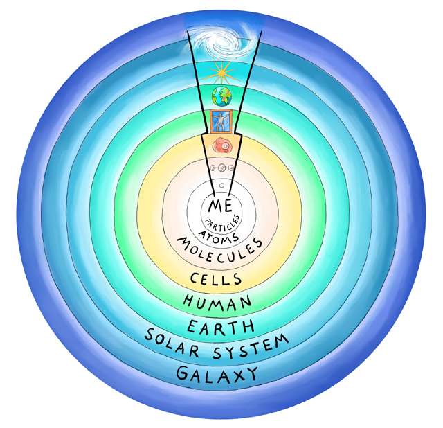

Who are you really? Spiritual traditions say you have a two-sided identity: outwardly you are human, inwardly you are divine. The Headless Way is a modern way of testing this ancient claim – a modern way of seeing Who you really are.
What you are depends on the range of the observer. At several feet you appear human, but at closer ranges you are cells, molecules, particles… At greater ranges your body is absorbed into a city perhaps, then the planet, the star, the galaxy…
In other words, you have layers, like an onion.
What are you at the centre of all your layers, at zero distance? Only you are there, so only you are in a position to say.
The Headless Way experiments invite you to look at your centre. Are you a thing at zero distance, separate from all other things, or are you the one, indivisible No-thing that contains all things?
As well as the experiments you will also find videos to watch, articles to read…
Enjoy discovering who you really are!
If you like this app, please make a donation via our website to help us continue to share the Headless Way. Thanks.